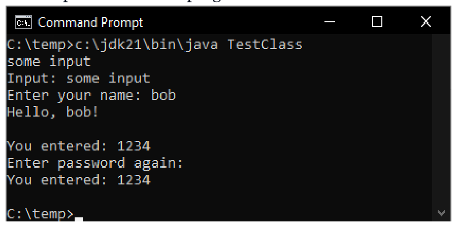

don't match"); }
//else do something with the pwd
Arrays.fill(pwd1, ' '); Arrays.fill(pwd2, ' '); //recommended
}Kết quả đầu ra của chương trình trên được hiển thị trong ảnh chụp màn hình dưới đây:

Phương thức readLine không nhận đối số nào thì không có gì đặc biệt. Nó chỉ trả về dòng
đầu vào hoàn chỉnh được người dùng nhập vào. Tôi đã nhập một số đầu vào và thông tin tương tự đã được in ra bởi phương thức
format. Phương thức readLine với đối số là một chuỗi định dạng cung cấp một gợi ý bằng văn bản cho
người dùng về những gì họ cần nhập. Hãy lưu ý rằng trong cả hai phương thức, các phím do người dùng nhấn
đều được hiển thị (echoed) lên console. Đó là lý do tại sao bạn thấy some input và bob được viết hai lần trong
ảnh chụp màn hình ở trên.
Các phương thức readPassword hoạt động tương tự nhưng chúng không hiển thị các phím do người dùng nhấn
lên console. Điều này rất hữu ích khi bạn muốn người dùng nhập thông tin nhạy cảm không nên
hiển thị trên console để tránh một ai đó đang quan sát màn hình console nhìn thấy.
Dữ liệu được trả về bởi các phương thức readPassword không được mã hóa nhưng lưu ý rằng các
phương thức này trả về một char[] thay vì một String để bạn có thể xóa sạch mảng ký tự này (chẳng hạn như bằng cách
sử dụng phương thức Arrays.fill ) sau khi sử dụng mật khẩu. Điều này đảm bảo rằng mật khẩu
do người dùng nhập sẽ không bị tiết lộ ngay cả khi trích xuất bộ nhớ chương trình (dumping program memory). Điều này sẽ không
thể thực hiện được nếu chúng trả về một String vì các chuỗi (string) là bất biến (immutable).